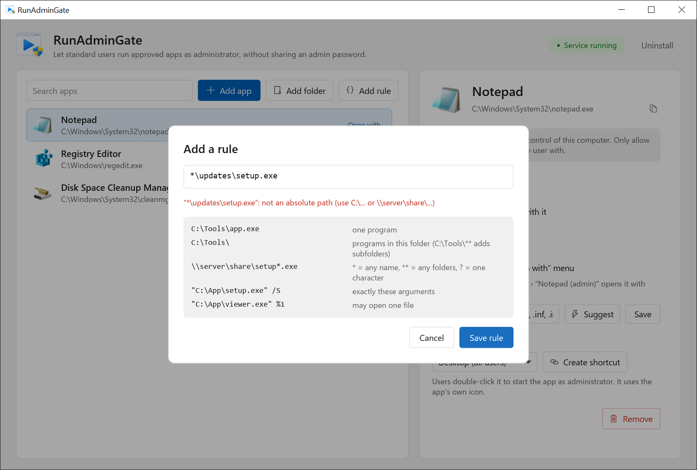
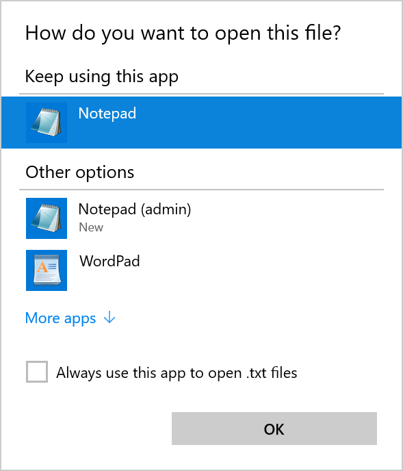

Download and unblock
Get the zip from the download page and check its SHA-256 against the value on the release page. Files from the internet carry a “downloaded” mark, so unblock the zip before you extract it.
PS C:\Setup> Get-FileHash .\RunAdminGate-x64.zip -Algorithm SHA256
PS C:\Setup> Unblock-File .\RunAdminGate-x64.zip
PS C:\Setup> Expand-Archive .\RunAdminGate-x64.zip -DestinationPath .\RunAdminGateKeep both files in the same folder: runadmingate.exe is the service and launcher, runadmingate-manager.exe is the window you configure it with.
The preview isn't code-signed yet. If SmartScreen shows Windows protected your PC, choose More info, then Run anyway. Do this on a test PC only.
Install the service
Open runadmingate-manager.exe and approve the UAC prompt; the manager needs admin rights because it writes to HKLM and installs a service. The header shows Service not installed. Click Install service.
The install:
- copies the launcher to
C:\Program Files\RunAdminGate\runadmingate.exe, - creates the RunAdminGate service (automatic start, restarts after a failure),
- creates the key
HKLM\SOFTWARE\RunAdminGateand registers the Event Log source, - starts the service. The header changes to Service running.
From a script, use the same switch. The launcher is a windowed program, so wait for it to read the exit code:
PS C:\Setup\RunAdminGate> $p = Start-Process .\runadmingate.exe -ArgumentList '/install','/quiet' -Wait -PassThru
PS C:\Setup\RunAdminGate> $p.ExitCode
0If Install service is greyed out, the manager can't find runadmingate.exe next to it. Put both files in the same folder.
Allow a program
Use one of the three buttons above the list:
- Add app picks one program file. This is the safest choice.
- Add folder allows the programs in a folder. Tick Include subfolders to go deeper.
- Add rule takes a path or pattern you type, for example an installer share.

| Entry | Allows |
|---|---|
C:\Tools\app.exe | One program. |
C:\Tools\ | Programs directly in this folder. Subfolders are not included. |
C:\Tools\** | Programs in this folder and every subfolder. |
\\fs01\updates\setup*.msi | * matches part of one name, ** any number of folders, ? one character. The pattern must match the whole path. |
"C:\App\setup.exe" /S | This program, started with exactly these arguments. Quote the path when arguments follow. |
"C:\App\viewer.exe" %1 | This program with no arguments, or with one file to open. |
%windir%\System32\cleanmgr.exe | Environment variables are expanded with the service's own (SYSTEM) values, never the user's. |
The drive letter or \\server\share must be written out. Relative paths and entries such as *\setup.exe are rejected, so an entry can never mean “a file with this name anywhere”.
Only allow folders that standard users can't write to. Anyone who can copy a file into an allowed folder can run anything as SYSTEM.
Also avoid programs that can start other programs, such as consoles, script hosts, or apps with a File › Open dialog.
Choose the allowed arguments
Select the program in the list. Under Allowed arguments, pick one:
- No arguments: the program starts exactly as listed. Anything extra is refused.
- Let users open a file with it: no arguments, or one full file path. The manager stores this as
%1, and Open with needs it. - Only these arguments: the arguments must match what you type, ignoring case. Inside arguments,
*matches anything and?one character, so/S /D=*allows any install folder.
Give users a shortcut or Open with
Shortcut. Under Shortcut, choose Desktop (all users), Start menu (all users) or Choose a folder…, then Create shortcut. It is called “App (admin)”, uses the app's icon and runs the app through the launcher.
Open with. Turn on Show in the “Open with” menu and list the file types, for example .txt, .log, .ini. Suggest fills in the types the app already handles. Click Save.

The first time, users right-click the file and choose Open with › Choose another app, then “App (admin)”. Ticking Always use this app makes it the default for that file type.
Scripts and your own shortcuts. Call the installed launcher with the program and its arguments:
C:\> "C:\Program Files\RunAdminGate\runadmingate.exe" "C:\Program Files\Fabrikam\Updater\update.exe"Test as a standard user
- Sign in with an account that is not in the local Administrators group.
- Double-click the “App (admin)” shortcut. The app opens with no UAC prompt.
- In Task Manager, open Details. The User name column shows SYSTEM for the app.
- Try a program that isn't on the list. RunAdminGate shows a message that it is not on the allow-list, and nothing starts.
PS C:\Users\mlee> & "C:\Program Files\RunAdminGate\runadmingate.exe" C:\Windows\System32\cmd.exe
# A message box says: This program is not on the RunAdminGate allow-list.Check the Event Log
Open Event Viewer › Windows Logs › Application, choose Filter Current Log… and pick the event source RunAdminGate.
| Event ID | Level | Meaning |
|---|---|---|
| 1 | Information | A program started as SYSTEM: account, session, command line and process ID. |
| 2 | Warning | A request was refused: account, program and the reason. |
| 3 | Error | A listed program could not be started. |
| 10 / 11 | Information | The service started or stopped. |
| 12 | Error | The service hit an error. |
| 20 | Warning | Some AllowedPath entries are invalid and were ignored. |
PS C:\> Get-WinEvent -FilterHashtable @{ LogName = 'Application'; ProviderName = 'RunAdminGate' } -MaxEvents 20 |
Format-Table TimeCreated, Id, Message -WrapRoll out to more PCs
Silent install. Run this from your deployment tool as SYSTEM or as an administrator. /allowedpath: takes entries separated by ; and adds them to the existing list without removing anything. Running /install again upgrades in place.
C:\Setup\RunAdminGate> start /wait runadmingate.exe /install /allowedpath:"C:\Program Files\Fabrikam\Updater\update.exe;\\fs01\updates\setup*.msi /qn" /quiet
C:\Setup\RunAdminGate> echo %ERRORLEVEL%
0Exit code 0 means installed and running. 1603 means it failed; the reason is in the Application log.
Group Policy. Manage the list centrally with a Group Policy Preferences registry item:
| Location | Computer Configuration › Preferences › Windows Settings › Registry › New › Registry Item |
| Action | Update |
| Hive | HKEY_LOCAL_MACHINE |
| Key path | SOFTWARE\RunAdminGate |
| Value name | AllowedPath |
| Value type | REG_EXPAND_SZ |
| Value data | Your entries separated by ; |
The service reads the value on every request, so a policy refresh is enough. The policy replaces the whole value each time it applies, so changes made in the manager on that PC will be overwritten. Keep the list in one place.
Shortcuts by policy. A Group Policy Preferences shortcut works the same as the manager's: target C:\Program Files\RunAdminGate\runadmingate.exe, the quoted program path as the arguments, and the program file as the icon.
Uninstall
Click Uninstall in the manager, or run the launcher from your setup folder:
C:\Setup\RunAdminGate> start /wait runadmingate.exe /uninstall /quietThis removes the service, the HKLM\SOFTWARE\RunAdminGate key with the allow-list, the Open with entries, the shortcuts the manager created, the Event Log source and C:\Program Files\RunAdminGate. If you run it from inside that folder, the last file is deleted at the next restart. Remove any Group Policy item first, or it will create the key again.
Troubleshooting
| What you see | Cause and fix |
|---|---|
| “This program is not on the RunAdminGate allow-list.” | No entry matches the path and arguments. Folder entries don't include subfolders. Paste the entry into the rule tester above. |
| Event ID 20, “Ignored AllowedPath entries” | An entry is relative, has a wildcard in the drive or share name, or uses an unknown %VARIABLE%. Fix or remove it. |
| “The administrator logon mode is not available yet.” | The entry or LogonFlag uses /asadmin. Remove the switch to run as SYSTEM. |
| “Requests are only accepted from an interactive desktop session.” | The launcher ran from a service or a scheduled task without a desktop. Start it from the user's session. |
| The app can't see a mapped drive | The app runs as SYSTEM, which has none of the user's drive mappings. Use a \\server\share path. |
| “App (admin)” isn't in the Open with menu | Windows shows new handlers under Choose another app first. Pick it there once. |